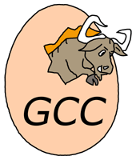
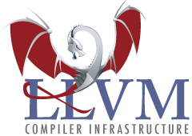
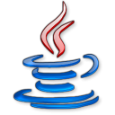
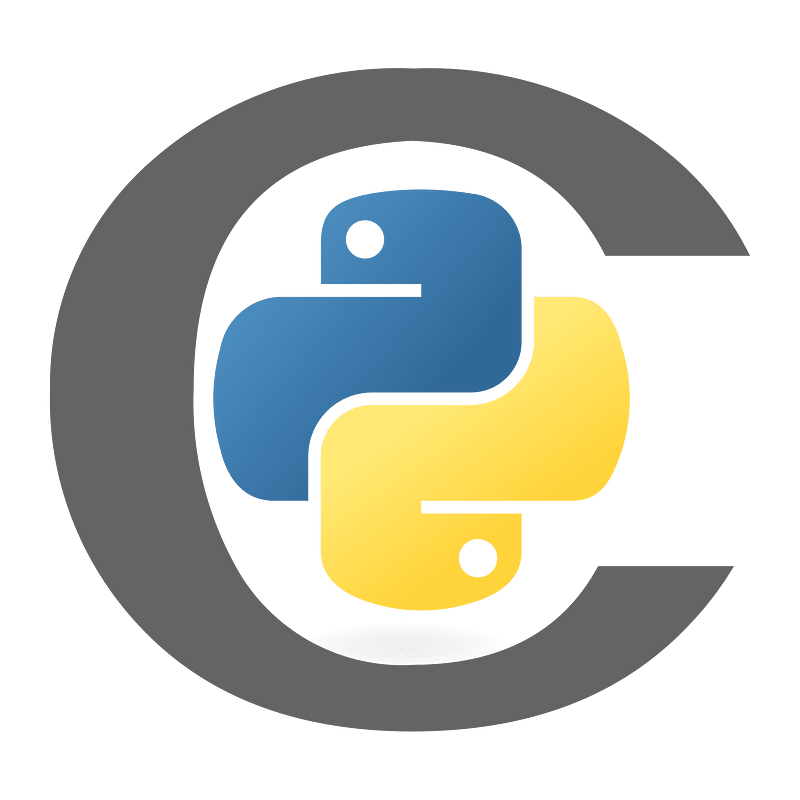
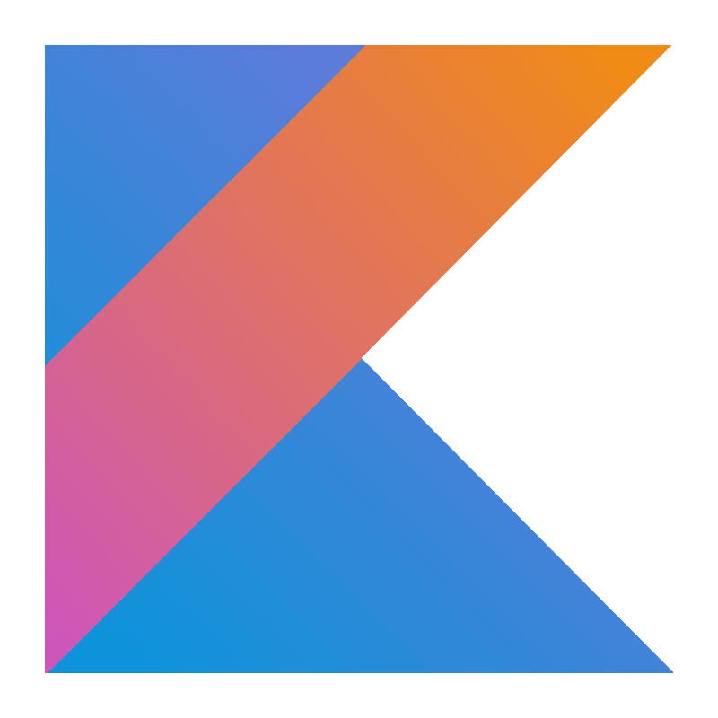

Principales Compiladores utilizdos en la actualidad

1. GCC (GNU Compiler Collection)
- Lenguajes compatibles: C, C++, Objective-C, Fortran, Ada, Go, y otros.
- Características: GCC es uno de los compiladores de código abierto más conocidos y usados. Se encuentra en sistemas operativos tipo Unix, especialmente Linux, y es conocido por su robustez y capacidad de optimización de código.
- Usos: Desarrollos de software de bajo nivel, sistemas operativos, y aplicaciones de alto rendimiento.

2. Clang/LLVM
- Lenguajes compatibles: C, C++, Objective-C, Objective-C++.
- Características: Clang es parte del proyecto LLVM y es una alternativa moderna a GCC. Es conocido por sus diagnósticos detallados, velocidad, y soporte de código modular. También ofrece optimización de código avanzada.
- Usos: Muy utilizado en el desarrollo de sistemas operativos (especialmente macOS y iOS) y aplicaciones de alto rendimiento en entornos de desarrollo modernos.

3. MSVC (Microsoft Visual C++)
- Lenguajes compatibles: C y C++.
- Características: Es el compilador de Microsoft para sus entornos de desarrollo como Visual Studio. Está altamente optimizado para el desarrollo de aplicaciones en Windows y proporciona muchas características avanzadas para C++.
- Usos: Desarrollos en Windows, especialmente para aplicaciones comerciales, videojuegos y desarrollo de software empresarial.

4. Java Development Kit (JDK)
- Lenguajes compatibles: Java.
- Características: El compilador javac incluido en el JDK convierte el código Java a bytecode que se ejecuta en la Máquina Virtual de Java (JVM). Es ampliamente utilizado en entornos multiplataforma y en el desarrollo de aplicaciones empresariales.
- Usos: Aplicaciones empresariales, desarrollo Android, aplicaciones web y de escritorio.

5. PyInstaller y Cython (para Python)
- Lenguajes compatibles: CPython.
- Características: Aunque Python es un lenguaje interpretado, herramientas como Cython y PyInstaller permiten compilar código Python en binarios ejecutables. Cython, además, convierte código Python en C para optimización de rendimiento.
- Usos: Creación de aplicaciones independientes, optimización de rendimiento para cálculos pesados.

6. Go Compiler
- Lenguajes compatibles: Go.
- Características: El compilador de Go es conocido por su rapidez y facilidad para compilar aplicaciones de alto rendimiento y de concurrencia.
- Usos: Desarrollo de aplicaciones de red, servidores, y sistemas distribuidos.
7. Rust Compiler (rustc)
- Lenguajes compatibles: Rust.
- Características: Rust es conocido por su seguridad en memoria y su rendimiento, similar al de C++, pero con un enfoque en la prevención de errores de puntero y condiciones de carrera.
- Usos: Sistemas de software de bajo nivel, desarrollo web, y sistemas de alto rendimiento.

8. Swift Compiler
- Lenguajes compatibles: Swift.
- Características: Swift es el lenguaje de Apple para desarrollo en macOS e iOS. Su compilador ofrece optimización avanzada y es compatible con LLVM.
- Usos: Desarrollo de aplicaciones para iOS y macOS, y también para desarrollo de servicios web y aplicaciones multiplataforma con SwiftUI.

9. Kotlin Compiler
- Lenguajes compatibles: Kotlin.
- Características: Kotlin se ha convertido en un lenguaje oficial para Android. El compilador de Kotlin traduce código a bytecode para la JVM o puede compilarse en JavaScript y código nativo.
- Usos: Desarrollo de aplicaciones móviles en Android y aplicaciones web.

10. Intel C++ Compiler (ICC)
- Lenguajes compatibles: C y C++.
- Características: Ofrece optimización avanzada para aplicaciones de alto rendimiento en arquitecturas Intel. Es ampliamente utilizado en sistemas de computación de alto rendimiento (HPC).
- Usos: Computación científica, análisis de datos, y simulaciones avanzadas en procesadores Intel.